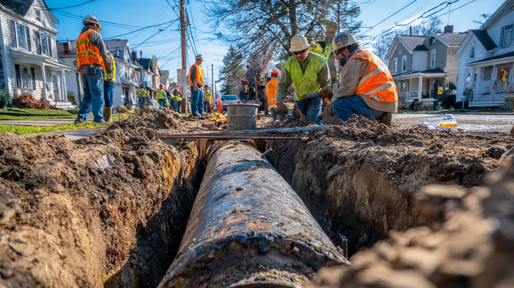

Lead Service Line Inventory and Replacement Compliance SaaS for Small Water Utilities
The United States has 9.2 million lead service lines delivering drinking water to homes, schools, and daycares. The EPA's Lead and Copper Rule Improvements, finalized October 2024, require every public water system to inventory every service line by 2027 and replace every lead pipe within ten years. There are 73,000 affected water systems. Ninety-seven percent of them serve fewer than 10,000 people. Most track pipe material in filing cabinets and microfiche archives dating to the 1920s. The federal government has committed $15 billion to fund replacements. The compliance management software connecting these small utilities to the money, the mandate, and the work doesn't exist.

The Problem
Lead service lines are the short pipes connecting water mains under the street to the plumbing inside a home or building. They were standard construction material from the 1880s through the 1950s, with some installations continuing into the 1980s. Lead is soft, easy to bend around obstacles, and resists corrosion in soil, which made it the plumber's preferred material for a century before anyone fully understood that it also poisons people at levels so low the CDC now says no threshold of exposure is safe for children, and that lead service lines remain the single largest source of lead contamination in American drinking water.
The EPA estimates that over 9.2 million lead service lines remain in service across the United States, delivering water to an estimated 22 million people. After decades of incremental regulation, the Biden administration finalized the Lead and Copper Rule Improvements (LCRI) on October 16, 2024, setting the most aggressive timeline in the rule's 35-year history: every public water system must complete a verified service line inventory, and every lead service line must be replaced within ten years.
The rule has bipartisan momentum. The Trump EPA, rather than rolling it back, reestablished a committee of senior leaders in 2025 to accelerate lead reduction, framing it under the Federal Lead Action Plan originally launched during Trump's first term. FY2026 appropriations allocated $2.875 billion for lead service line replacement through the Drinking Water State Revolving Fund. This is not a regulation at risk of political reversal. Lead in children's drinking water is one of the few issues where both parties compete to look tougher.
The problem is execution. The United States has approximately 152,000 public water systems. According to EPA research data, 97% of them are small systems serving 10,000 or fewer people. These are village water departments run by two employees, rural water districts where the operator also drives the snowplow, manufactured home community systems managed by a property owner who inherited the pipes along with the lots, and tribal water systems where a single operator covers three separate distribution systems spread across a reservation with no reliable cellular service between them. They have no GIS department, no asset management software, and many do not have a digitized map of their distribution system at all.
The LCRI required an initial service line inventory submission by October 16, 2024. The baseline inventory, verified through field investigation, is due by November 1, 2027. For systems that cannot determine a service line's material from records, the line must be classified as "Lead Status Unknown," which triggers the same replacement obligations as a confirmed lead line unless the utility physically verifies it. As of late 2025, over 9 million service lines remained classified as "unknown" across all US systems. That number barely shrank from the total lead estimate because most utilities submitted inventories based on incomplete records, punting the hard work of field verification to the 2027 deadline. The unknown pile is the real crisis hiding inside the inventory deadline.
The Gap in the Market
Some companies have started building pieces of the puzzle, but nobody has assembled a complete compliance platform for the small utility market.
| Company | What They Do | What's Missing |
|---|---|---|
| BlueConduit | Machine learning predictions for identifying lead service lines. Google.org-backed, Sourcewell government contract. Has inventoried 1M+ service lines since 2016. Free basic estimation tool. | Focused on the prediction layer, not the operational workflow. Helps you figure out which pipes are probably lead, but doesn't manage the replacement program, customer notifications, state reporting, or funding applications. Overkill and overpriced for a 500-connection rural water district. |
| Esri (ArcGIS) | GIS platform with lead service line inventory templates. Used by large utilities for mapping and public-facing dashboards. Deep integration with engineering workflows. | It's a platform, not a product. A small utility needs a GIS analyst to configure it. Annual license cost starts around $5,000-10,000 for the relevant tier. A village water department with 200 connections and a $180,000 annual budget cannot justify or operate an Esri deployment. |
| Trinnex (leadCAST) | Desktop tool for managing lead and copper rule programs, integrated with Esri. Predictive model for prioritizing replacements. Esri partner solution. | Desktop-first, Esri-dependent, enterprise-priced. Built for large municipal engineering departments, not the 70,000 small systems that represent the bulk of the compliance burden. No self-serve onboarding. |
| 120Water | Water sampling kits and compliance management for lead testing. Partners with BlueConduit through Sourcewell. Handles the sampling logistics side. | Focused on testing compliance (collecting water samples, managing lab results), not the inventory and replacement lifecycle. Valuable piece but doesn't solve the core problem of tracking which pipes are lead, scheduling replacements, managing contractors, or filing state reports. |
The pattern is familiar. Enterprise vendors built tools for large cities that already have GIS departments and engineering staff. Startups attacked the most technically interesting problem (prediction) rather than the most operationally painful one (compliance workflow). A water system operator in Macon County, Illinois, with 340 connections and no computer newer than 2019, has no turnkey path from "we got the EPA letter" to "our inventory is filed and our replacement plan is funded," and every week that passes without one is a week closer to the enforcement deadline nobody in that two-person office has time to think about.
The Solution
A cloud-based compliance management platform purpose-built for small water systems navigating the LCRI, priced per connection and designed for operators who manage pipes, not software:
1. Inventory builder with record digitization ($3/connection for initial setup): Upload photos of paper records, tap cards, and plumber's logs. OCR extracts addresses, installation dates, and material descriptions. The system creates a digital service line inventory prepopulated with available data, flags gaps, and generates the state-specific inventory template prepopulated for submission. For the 40% of connections where records are missing or ambiguous, the platform generates a prioritized field verification work order list, optimized by geographic cluster to minimize travel for the operator doing the physical inspections.
2. Field verification mobile app (included in subscription): An operator walks a neighborhood with a phone. At each address, the app shows what the records say, prompts for a visual or physical inspection (scratch test, magnet test, or potholing), captures a geotagged photo of the exposed pipe, and updates the inventory in real time. Auto-classifies material based on visual characteristics. Works offline because rural water districts don't always have cellular coverage at the curb box.
3. Replacement program manager ($2/connection/month during active replacement): Once lead lines are confirmed, the platform manages the replacement lifecycle: customer notification letters (auto-generated to meet LCRI's 30-day notification requirement), contractor bid solicitation, work order scheduling, as-built documentation, and post-replacement sampling coordination with labs. Tracks the 10% annual replacement rate target required by LCRI, projecting whether the system is on pace to meet the ten-year deadline and flagging shortfalls early.
4. Funding application assistant (included in subscription): Every state distributes Bipartisan Infrastructure Law (BIL) funds through its Drinking Water State Revolving Fund (DWSRF), and each state has different application forms, timelines, and eligibility criteria. The platform maintains a database of state-specific funding programs, auto-fills application fields from the inventory data already in the system, and walks the operator through the submission process. For systems serving disadvantaged communities, the BIL mandates that 49% of lead service line replacement funding be provided as principal forgiveness (essentially grants, not loans). Many small systems eligible for grant money don't apply because the application process is too complex. This feature alone could justify the subscription cost.
5. State reporting and public disclosure portal (included in subscription): LCRI requires utilities to make their service line inventories publicly available and to include lead information in annual Consumer Confidence Reports. Each state primacy agency has a different reporting portal and format. The platform generates compliant reports for the utility's state, manages the public-facing inventory viewer (embeddable on the utility's website or hosted on a platform subdomain), and tracks submission deadlines. When the inventory changes, reports update automatically, because for a two-person utility, remembering to update three different state portals after every field verification is the kind of administrative overhead that causes missed deadlines.
The Math: What Non-Compliance Actually Costs
Consider a community water system in rural Ohio serving 1,200 connections. Annual operating budget: $420,000. Two full-time operators. Paper records from the 1960s stored in a metal filing cabinet at the water treatment plant.
Scenario A: No compliance software (status quo)
The utility received the EPA's October 2024 inventory letter. The operators spent 80 hours manually transcribing paper records into a state-provided Excel template, classifying 890 connections as "Lead Status Unknown" because the records were illegible or missing. That inventory was submitted on time but is operationally useless. To verify the 890 unknowns by the November 2027 deadline, the utility needs to physically inspect roughly 30 service lines per month for the next 30 months. At 45 minutes per inspection (travel, dig, photograph, document), that's 22.5 hours per month of additional fieldwork for operators already working at capacity. Without software to optimize routes, track progress, or generate reports, the utility will almost certainly miss the 2027 deadline.
The EPA's compliance advisory explicitly states that failure to meet inventory requirements "may result in federal enforcement actions." State primacy agencies can issue administrative orders, assess fines (typically $1,000-25,000 per day of violation under state Safe Drinking Water Act provisions), or require the system to issue public notification of noncompliance. For a system with a $420,000 budget, even a $5,000 fine is ruinous, and the reputational damage of a public notice telling customers their water system failed to determine whether their pipes contain lead is the kind of local-news story that ends careers, triggers boil-water anxiety, and makes the next rate increase vote impossible to win.
Scenario B: Compliance platform
The utility uploads photos of its paper records. OCR populates 310 connections with high-confidence material classifications (copper and plastic installations from the 1980s-2000s where records are clear). The remaining 890 unknowns are prioritized by construction date and geographic cluster. The field verification app generates an optimized route: instead of 30 random inspections per month, the operator verifies 40 connections per month in concentrated clusters, finishing in 22 months instead of 30, with 15 hours of fieldwork per month instead of 22.5. Every verification auto-updates the state inventory. Quarterly reports generate themselves.
When the utility identifies 87 confirmed lead service lines, the platform generates customer notification letters, auto-fills the state DWSRF application (the system qualifies for $348,000 in principal forgiveness based on its disadvantaged community designation), and creates a replacement schedule that meets the 10% annual pace. The operator manages the program from a phone instead of a filing cabinet.
Annual cost of the platform for 1,200 connections: Initial setup (record digitization): 1,200 × $3 = $3,600 (one-time). Annual subscription: 1,200 × $1.50/month × 12 = $21,600. Total first-year cost: $25,200. Total annual cost thereafter: $21,600.
What the platform saves: 90 operator-hours in year one on inventory management (at $35/hour loaded cost = $3,150). 70 hours/year on report generation and state submissions ($2,450). Avoided fine risk (conservatively $5,000-25,000). Funding captured through application assistance ($348,000 in principal forgiveness the utility likely wouldn't have applied for). Net ROI in year one, counting only the funding capture: 13.8x.
Revenue Model
| Revenue Stream | Amount | Notes |
|---|---|---|
| Record digitization (one-time per system) | $3/connection | OCR + data entry for paper records. Includes initial inventory template generation. ~$1,800 for a 600-connection system. |
| Monthly compliance subscription | $1.50/connection/month | Inventory management, field verification app, state reporting, public disclosure portal, funding program database. Floor of $150/month for systems under 100 connections. |
| Replacement program manager (add-on) | $2/connection/month during active replacement | Contractor management, work order scheduling, customer notifications, replacement pace tracking. Only active during the replacement phase. |
| Funding application preparation | $1,500-3,000 per application | State DWSRF, WIFIA, EPA Water Infrastructure Finance, state-specific programs. Fixed fee per application because the value is obvious and quantifiable. |
| Premium: engineering review integration | $500/month | For systems that need replacement design review, connects to partner engineering firms for plan approval workflow. Phase 2 product. |
Unit economics on a 1,200-connection system: One-time digitization: $3,600 at ~75% gross margin (OCR is automated, manual review costs $900). Annual subscription: $21,600 at 90%+ margin (pure SaaS). Funding application fee (assume 1 per year): $2,000. Total first-year revenue per customer: $27,200. Estimated customer acquisition cost via state association conferences, EPA technical assistance partner referrals, and state primacy agency co-marketing: $4,000-6,000. LTV at 8-year compliance lifecycle (inventory through replacement completion): $178,400 subscription + $16,000 in application fees = $194,400. LTV:CAC ratio at midpoint CAC: 38.9x.
Those LTV:CAC numbers look impossibly high, and they warrant skepticism because the 8-year lifecycle assumes zero churn once a utility is on the platform, which is reasonable for a compliance tool tied to a federal mandate with a fixed deadline but aggressive for any SaaS model. If 20% of customers churn annually after year 3 (once inventories are complete and the immediate crisis passes), adjusted LTV drops to roughly $90,000, yielding a still-excellent 18x LTV:CAC. Sensitivity analysis matters, and the churn assumption is the biggest variable.
Market Size
TAM: The National League of Cities cites 9.2 million lead service lines requiring replacement across 73,000+ water systems. At a blended $1.50/connection/month across all connections (not just lead, because the inventory mandate covers every service line), the SaaS TAM is approximately $1.97 billion per year (109 million total US service connections × $1.50/month × 12). That's the theoretical ceiling and includes large utilities that will build or buy enterprise solutions. The realistic addressable SaaS market for small and medium systems is the more useful number.
SAM: Focus on the ~70,000 small water systems (serving under 10,000 people) that lack existing asset management software. These systems collectively serve approximately 44 million connections (40% of total). At blended pricing of $1.50/connection/month: $792 million per year. Even at 50% discount for the smallest systems, SAM exceeds $400M/year.
SOM (year 3): 400 water systems averaging 800 connections each, at $1.50/connection/month = $5.76M ARR, plus $1.4M in one-time digitization fees and $800K in funding application fees. 0.6% penetration of SAM.
Why Now
The mandate is live and the first major deadline is 17 months away. The LCRI baseline inventory is due November 1, 2027. For the thousands of utilities that submitted placeholder inventories in October 2024 (classifying most connections as "unknown"), the real work of field verification starts now. Waiting until 2027 to begin is arithmetically impossible for systems with thousands of unknowns. The urgency curve peaks in 2026-2027, and utilities that miss the deadline face federal enforcement.
$15 billion in federal money is flowing and small systems can't access it. The Bipartisan Infrastructure Law allocated $15 billion specifically for lead service line replacement through the DWSRF, with 49% as principal forgiveness for disadvantaged communities. But accessing those funds requires applications that small systems struggle to complete. A Center for American Progress analysis documented that states like Pennsylvania and Wisconsin have built successful programs, but many small systems in other states leave money on the table because the application burden exceeds their administrative capacity. The platform that connects a small utility's inventory data to a state funding application captures enormous value.
Bipartisan political support removes regulatory risk. The Trump EPA is actively distributing FY2026 lead replacement funds ($2.875 billion) and has framed lead reduction as a continuation of the first-term Federal Lead Action Plan. Both parties want credit for removing lead pipes from schools. Legislative risk for this particular regulation is lower than for almost any other environmental rule on the books, which matters enormously for a SaaS company whose revenue depends on the mandate persisting through the customer lifecycle.
State primacy agencies are desperate for technology partners. State drinking water programs administer the LCRI on behalf of EPA but are themselves understaffed and under-tooled. Several states have issued RFPs for technical assistance providers to help small systems comply. A SaaS platform that reduces the support burden on state staff has a natural co-marketing channel: the state agency recommends the platform to its regulated community because it makes the state's own job easier. This is the GovTech distribution model that companies like CivicPlus and Tyler Technologies have used to reach small municipalities at scale.
Startup Costs
| Category | Cost | Notes |
|---|---|---|
| Software development (MVP, 8 months) | $320K | 2 full-stack engineers + 1 mobile developer. Inventory management, field verification app (iOS/Android with offline sync), OCR pipeline for record digitization, state reporting templates. |
| GIS and mapping integration | $60K | Open-source mapping (Mapbox/OpenStreetMap) for service line visualization. NOT Esri. Keeps per-customer cost near zero. |
| State regulatory template library | $45K | Research and encode reporting requirements for all 50 states + territories. Contract with 1-2 water regulatory specialists (part-time, 6 months). This is the moat: nobody wants to build this, but every customer needs it. |
| Pilot program (20 utilities, subsidized onboarding) | $35K | Free digitization for 20 small water systems in 3-4 states in exchange for feedback, case studies, and state association introductions. The case studies become the sales engine. |
| Compliance and security | $30K | SOC 2 Type 1 readiness, water utility data handling policies. Government customers require this. Not optional. |
| Conference and association presence (year 1) | $40K | AWWA ACE, state rural water conferences, National Rural Water Association annual conference. Booth, travel, demo tablets. The buyer is at these events and nowhere else. |
| Operating buffer (12 months) | $50K | Cloud hosting (AWS GovCloud for government data handling), OCR API costs, support staffing. |
| Total | $580K |
Limitations
The 9.2 million lead service line count is an EPA estimate based on partial data. The actual number could be significantly higher or lower. Many utilities submitted inventories in 2024 that classified a majority of their connections as "unknown," and until field verification is complete, the true lead count remains uncertain. If the actual count is substantially lower (because many "unknowns" turn out to be copper or plastic), the urgency of the replacement program diminishes and with it the willingness to pay for a compliance platform.
The $15 billion in BIL funding, while committed, flows through state revolving funds that face their own administrative bottlenecks. Some states have been slow to establish application programs, and the actual disbursement rate is behind the authorization pace. If funding fails to reach small systems in time, those systems may defer compliance rather than self-fund replacements at $3,000-12,000 per line, which would shrink the near-term market for a compliance tool even as it increases the long-term enforcement risk.
The unit economics assume low customer acquisition cost through state association channels. In practice, selling to government entities involves procurement processes, budget cycles, and decision timelines that stretch months. A 6-month sales cycle is optimistic for some systems; 12-18 months is common in GovTech. The LTV:CAC ratio remains attractive even with a $12,000 CAC, but cash flow during the first two years will be challenging if sales cycles are long and customers take 60-90 days to pay invoices.
The state regulatory template library (50 states + territories) is a significant ongoing maintenance burden. State primacy agencies update their reporting requirements, change portal formats, and revise application procedures regularly. Keeping 50+ state templates current requires dedicated staff and relationships with state regulators, which is expensive and does not scale linearly.
Strongest Counterargument
State primacy agencies could build this themselves. They have the strongest incentive (they're responsible for enforcing LCRI compliance among their regulated systems), the clearest distribution channel (they already communicate with every water system in their jurisdiction), and access to EPA technical assistance funding to pay for it. Several states have already built basic inventory submission portals. If 10 large states build adequate compliance platforms and make them available to their small systems for free, the addressable market shrinks by 60%.
This isn't hypothetical. West Virginia launched an online LSLI portal for its water systems. Virginia has a detailed guidance framework with submission templates. If enough states follow suit with genuinely usable tools (not just PDF templates and spreadsheet uploads), the gap narrows considerably.
The counterpoint: state agencies are building submission portals, not workflow tools. Accepting a completed inventory is fundamentally different from helping a utility build that inventory from paper records, manage field verification routes, track replacement contractors, and apply for funding. State portals are the IRS e-file equivalent; the startup opportunity is the TurboTax equivalent. State IT departments are not building TurboTax. They are chronically understaffed (the National Conference of State Legislatures has documented the capacity challenges facing state drinking water programs), and the LCRI compliance burden is landing on top of existing PFAS monitoring mandates, cybersecurity requirements, and routine oversight obligations. The more states build basic portals, the more standardized the submission formats become, which actually makes the third-party compliance platform more valuable because it has clearly defined targets to generate reports for. History says government agencies build intake forms. Private companies build the preparation and workflow layer. That pattern has held from tax filing to building permits to healthcare billing.
What You Can Do
If you run a small water system: Pull your October 2024 inventory submission and count how many connections you classified as "unknown." Divide that number by 18 (the months remaining until November 2027). That's how many field verifications you need to complete per month starting now. If that number exceeds what your staff can handle alongside their other duties, start the conversation with your state drinking water program about technical assistance funding. The EPA's LCRI implementation tools page has templates and webinar recordings. Don't wait until 2027 to discover you needed help in 2026.
If you're building this product: Start with three pilot states that have active DWSRF programs and cooperative state drinking water agencies. Ohio, Michigan, and Illinois have the highest lead service line concentrations and the most developed state funding programs. Your first 20 customers will come through the state rural water association in one of those states. Attend the National Rural Water Association annual conference (typically February). Every state has a rural water association that provides circuit-rider technical assistance to small systems. Those circuit riders are your evangelists: they visit 20-30 small utilities per month and will recommend your platform if it genuinely saves their clients time. Build for the circuit rider's recommendation, not for the procurement officer's RFP.
If you're an investor evaluating GovTech water infrastructure: The LCRI creates a ten-year compliance cycle with hard federal deadlines, bipartisan political support, and $15 billion in dedicated federal funding. The comparable regulatory event in water technology was the 1996 Safe Drinking Water Act Amendments, which created the compliance monitoring industry that companies like Hach (acquired by Danaher for $3.8 billion) now dominate. The LCRI's inventory and replacement mandates are creating an equivalent compliance technology category, but one that starts digital-native rather than instrument-based. The small utility segment (70,000 systems, 44 million connections) is structurally underserved by enterprise vendors and too fragmented for consulting firms to address profitably. SaaS is the only economic model that works at this scale, and the first platform to establish state association distribution will have a durable moat.
The Bottom Line
There are 9.2 million lead service lines in the ground right now, and a federal mandate with bipartisan support says every one of them has to be inventoried, verified, and replaced within a decade. The money is committed: $15 billion in federal funds, with 49% available as grants for disadvantaged communities. The mandate is live: inventory deadlines are measured in months, not years, and the EPA has explicitly warned of federal enforcement for noncompliance, which means every small utility that submitted a placeholder inventory full of "unknowns" in October 2024 now faces a ticking clock they cannot stop and a workload they cannot complete without help. The utilities that need to do the work are overwhelmingly small, understaffed, and running on paper records from the Eisenhower administration. The enterprise vendors built tools for cities with GIS departments, and the startups built prediction models for utilities with data scientists, but nobody built the simple, affordable, turnkey compliance platform that gets a two-person water department from a filing cabinet full of yellowed tap cards to a verified digital inventory, a funded replacement plan, and a clean state report. That gap is the company.